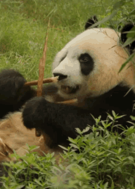

the answer to your question of
A panda's daily diet consists almost entirely of the leaves, stems and shoots of various bamboo species.
Now since the bamboo contains very little nutritional value so pandas must eat 12-38kg every day to meet their energy needs.
But they do branch out, with about 1% of their diet comprising other plants and even meat. While they are almost entirely vegetarian, pandas will sometimes hunt for pikas and other small rodents.

Indeed, as members of the bear family, giant pandas possess the digestive system of a carnivore, although they have evolved to depend almost entirely on bamboo.
This reliance on bamboo leaves them vulnerable to any loss of their habitat – currently the major threat to their survival.
where as, the Giant pandas in the wild will occasionally eat other grasses, wild tubers, or even meat in the form of birds, rodents, or carrion.
In captivity, they may receive honey, eggs, fish, yams, shrub leaves, oranges, or bananas along with specially prepared food.
pandas fed by humans and wild pandas, the last 1% of their diet is a little bit different.
Captive pandas also eat fruits (they love apples the most), nutritious "panda cakes", and steamed corn bread. In the hot summer, they are fed ice with apples inside it to cool them down. The food is strictly selected, going through several rounds of examination before being fed to pandas, to make sure the pandas get enough nutrition, and for the safety of pandas.
Wild pandas prefer hunting for pikas and other small rodents as the last part of their diet, though pandas are not very fast, so injured and wounded animals are more within their league.